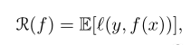
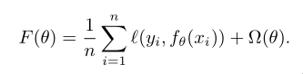
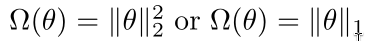
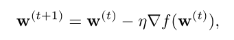

Stochastic Gradient Descent
D is unknown, so it is not possible to minimize the risk
function.
The ERM rule minimizes the empirical risk over the hypothesis
class H.
Regularized risk minimization jointly minimizes the empirical
risk and a regularization function over h.
A different learning approach: SGD.
In SGD, we minimize L(w), where w is the hypotheses as a vector.
GD is an iterative optimization procedure. We improve the solu‐
tion at each step. We are minimizing the risk function, but we
don’t know D, so we don’t know the gradient of L(w).
SGD circumvents this problem. SGD takes a step along a random di‐
rection. As long as the expected value of the direction is the
negative of the gradient.
The goal is to find a predictor with a small risk on unseen data:

where l is a loss function. This loss is typically convex in the
second argument (e.g., square loss or logistic loss).
In the ERM approach we choose the predictor by minimizing the em‐
pirical risk over a parameterized set of predictors, potentially
with regularization.
In optimization, we try to minimize the following objective func‐
tion,

where Ω is the regularizer. fθ(x) is a parameterization hypothe‐
sis.

Why do we use GD rather than directly optimize over this objec‐
tive function?
‐2‐
In general, the minimizer has no closed form. Even when it has
one (e.g., linear predictor and square loss), it could be expen‐
sive to compute for large problems. We thus resort to iterative
algorithms.
Basic gradient descent algorithm
Convergence rate for convex‐Lipschitz functions.
The standard gradient descent approach for minimizing a differen‐
tiable convex function.
The gradient of a differentiable function is the vector of par‐
tial derivatives.
We start with an initial value of w (for example, w = 0).
At each iteration, take a step in the direction of the negative
of the gradient at the current point.

Intuitively, since the gradient points in the direction of the
greatest rate of increase of f around w, the algorithm makes a
small step in the opposite direction.
Subgradient
GD can be applied for nondifferentiable functions as well.